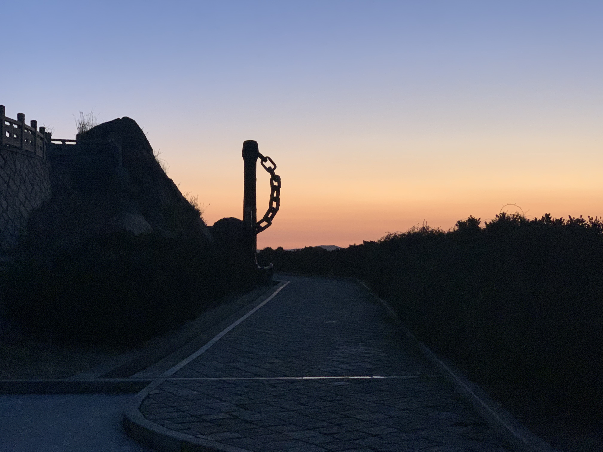
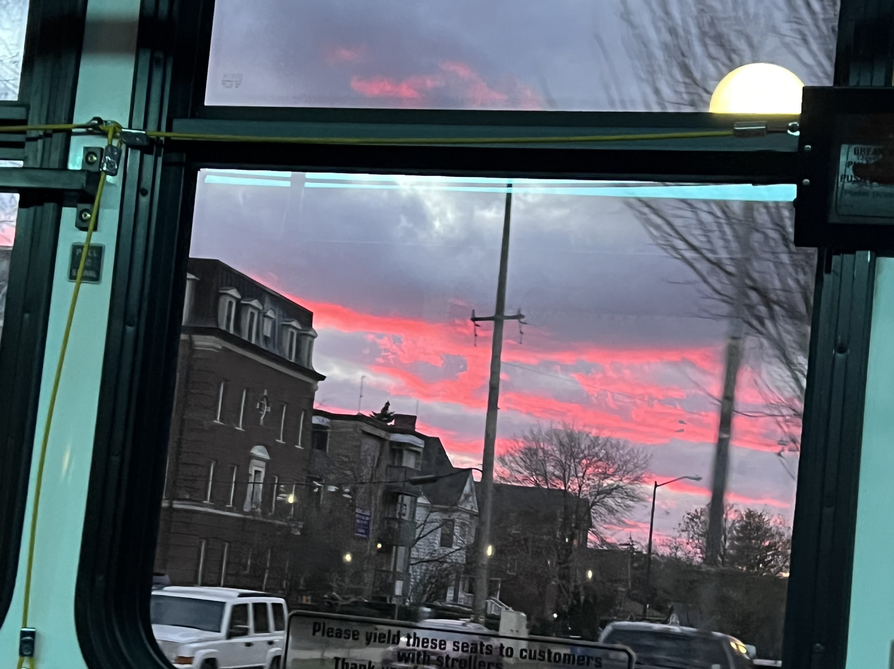
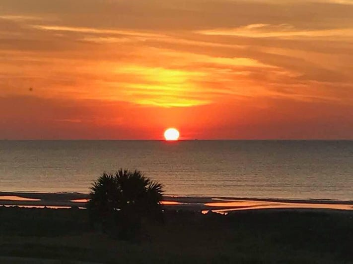

Sunrises And Sunsets
the different sunrises and sunsets which I recorded, I want to share some beautiful sunset and sunrise in my homepage. I think it is a positive attitude to life. People could browse them and these pictures could convery a good mood and life attitude to them. Contemplating this scenario while gazing sunward at dusk or dawn, we might feel as if we could sense the difference between the two times of day. But in real life, it's impossible to completely divorce our perceptions of the scene from our awareness of the hour. So, is there any objective way to distinguish an upward-trending sun from a downward one? According to atmospheric physicists David Lynch and William Livingston, the answer is "yes, and no."
Feeling of different sunforms
"At sunset, our eyes are daylight adapted and may even be a bit weary from the day's toil," Lynch and Livingston write. "As the light fades, we cannot adapt as fast as the sky darkens. Some hues may be lost or perceived in a manner peculiar to sunset. At sunrise, however, the night's darkness has left us with very acute night vision and every faint, minor change in the sky's color is evident." In short, you may perceive more colors at dawn than at dusk. [Red-Green & Blue-Yellow: The Stunning Colors You Can't See] In the future, I want to put some video and my innovations on this page, I want to show myself in all directions. For example, I will put some vlogs, research process, landscape modeling process and plants analysis in here.
the sunrise in zhoushan harbor
the sunset in the west lake, China

the sunset on the center campus

the sunset on my way home

the sunset in Giant Sequoia National Forest

the sunrise in aklamakan Desert

the sunset which is red color
the plentful lights is other kind of form of sun

the sunset in California
What is sunset
Sunset, also known as sundown, is the daily disappearance of the Sun below the horizon due to Earth's rotation. As viewed from everywhere on Earth (except the North and South poles), the equinox Sun sets due west at the moment of both the spring and autumn equinoxes. As viewed from the Northern Hemisphere, the Sun sets to the northwest (or not at all) in the spring and summer, and to the southwest in the autumn and winter; these seasons are reversed for the Southern Hemisphere. The time of sunset is defined in astronomy as the moment when the upper limb of the Sun disappears below the horizon.[1] Near the horizon, atmospheric refraction causes sunlight rays to be distorted.